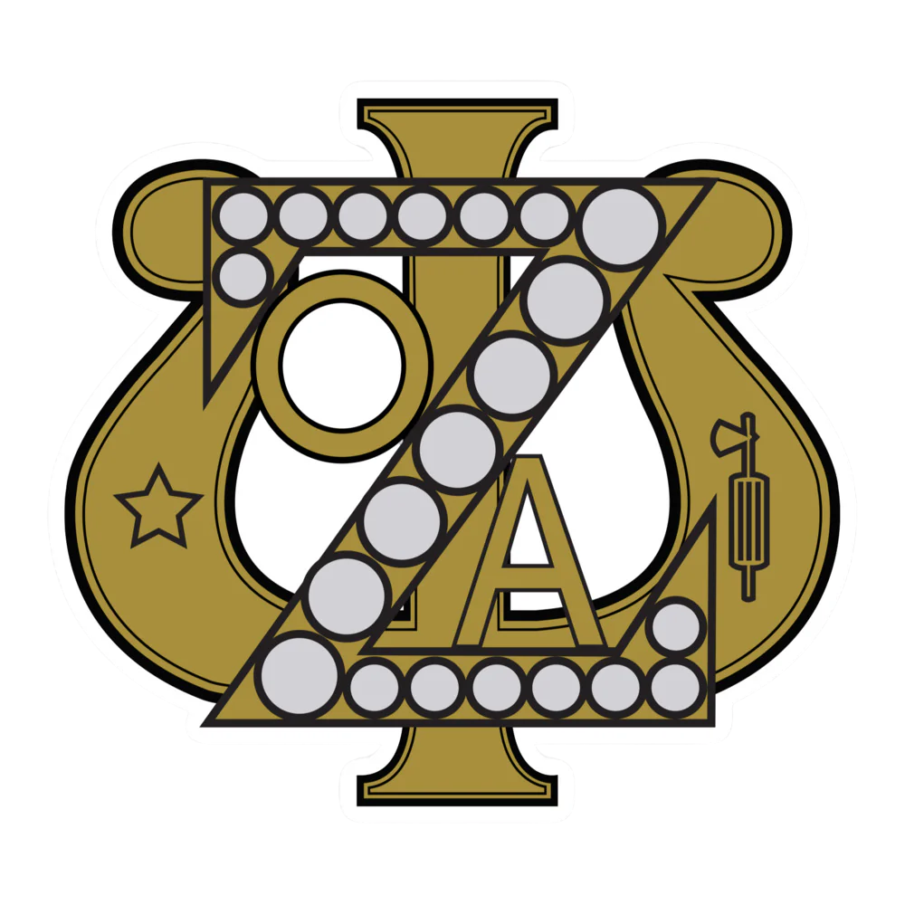

HEY!
It's Phoom
The 'h' is silent by the way

Welcome to my portfolio!
I'm dreamer
I'm a junior from Chiang Mai, Thailand, planning
to major in Applied Math and Quantitative Social Science at Dartmouth College.
My interests center around using data science to address sociopolitical challenges and optimizing operations through predictive modeling and
data normalization. I am driven by the challenge of applying different
modeling approaches to real-world ambiguity, using tools like LightGBM and causal analysis to transform raw
data into clear and strategic narratives.
In my free time, I enjoy photography, playing video games and
volleyball, watching soccer and tennis, running, collecting Magic: The Gathering
cards, and trying new foods.


in soccer (we lost 4-0)

LOGGED HOURS

Accenture
Finance Intern
Assisted with financial operations and used Excel to analyze profit/loss data of SET-listed companies in a professional work environment.

DartWrite
Research Assistant
Qualitative and statistical analysis of student writing samples by coding rhetorical patterns in source usage and evaluating trends in writing development across multiple class years.

Indorama Ventures
Data Science and Investor Relations Intern
Built a centralized financial database with automated data workflows and Thai-to-English translation, integrating SET data and Bloomberg/Refinitiv APIs.
PROJECTS
Machine Learning for Urban Air Pollution
A framework that isolates the meteorological drivers of PM2.5 concentrations and
evaluated LightGBM and XGBoost models that significantly outperformed OLS baselines.
ManaMetrics
A Magic: The Gathering card price tracker that scrapes real-time market data to
forecast future value shifts.
Forza Index: A World Cup 2026 Predictor
A 2026 World Cup prediction engine that scrapes live lineups and results,
runs them through a machine learning model and 10,000-iteration Monte Carlo simulation,
and outputs win probabilities, scoreline distributions, and a full bracket forecast for all 48 teams.



Debugging Outside the Screen
Campus involvement is a big part of my college life! I am currently working 3 jobs and I am passionate about creating a sense of home for everyone around me. Here are some of the organizations I am involved with: Office of Pluralism and Leadership (OPAL), International Student Experience Office (ISEO), Office of Communications, World Affairs Council, Asian American Pacific Islander Heritage Month (AAPIHM) planning committee, Thai Student Association, DartSlam Volleyball Club, Aegis Yearbook Club, and Dartmouth Model United Nations.